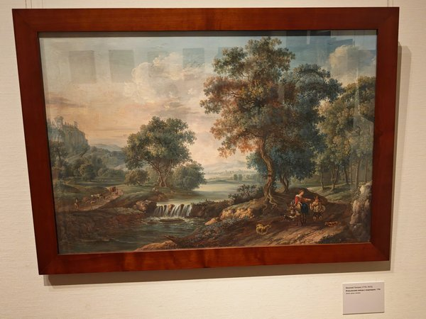
Государственная Третьяковская галерея
выставка
29 фотографийДата посещения23.10.2026
Работает27.03.2026 — 01.11.2026
Снимков29
Дневник
Выставки и постоянные экспозиции музеев, где я побывал, — с датами и своими снимками.

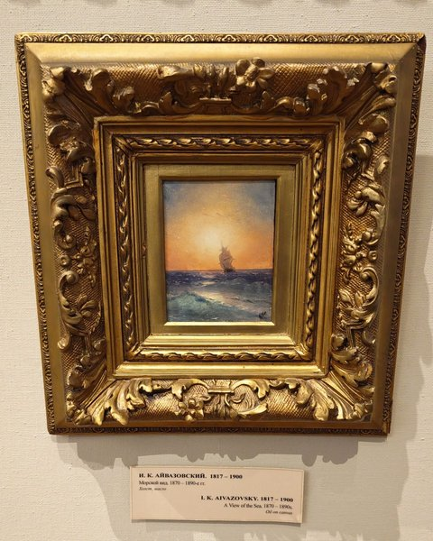
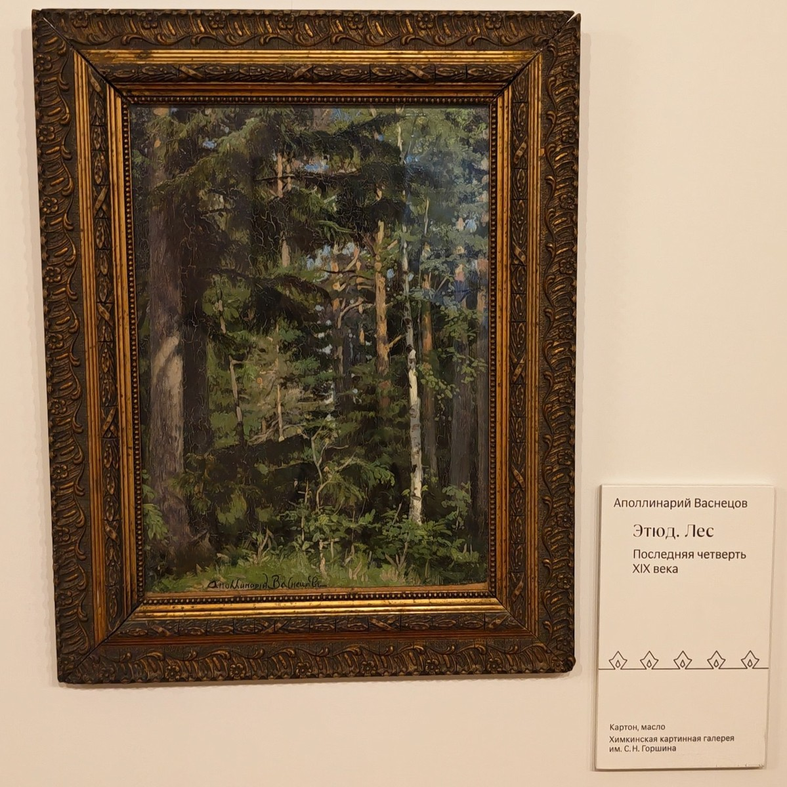
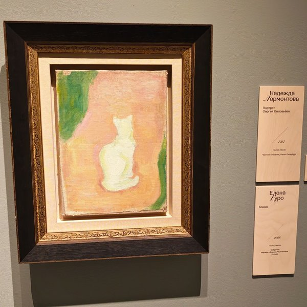
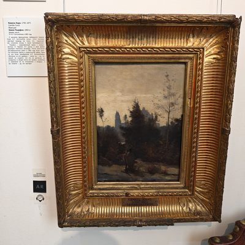
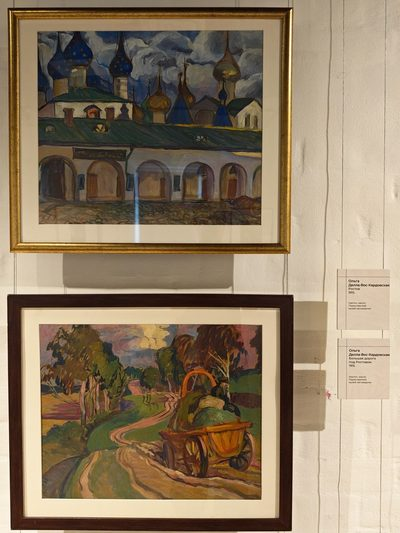
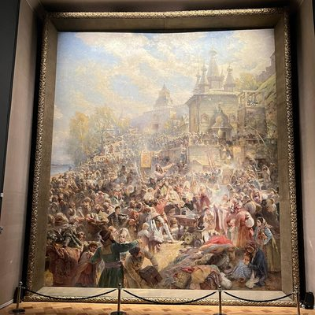
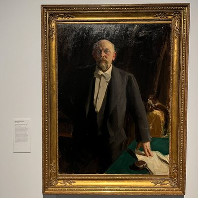
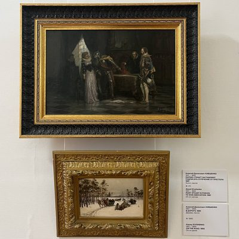
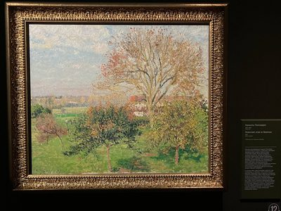
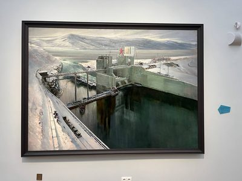
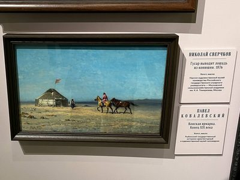
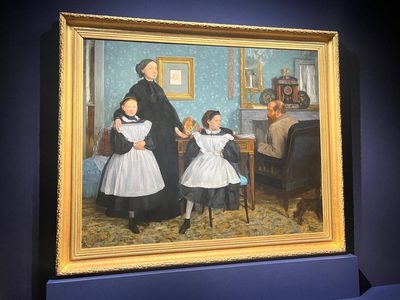
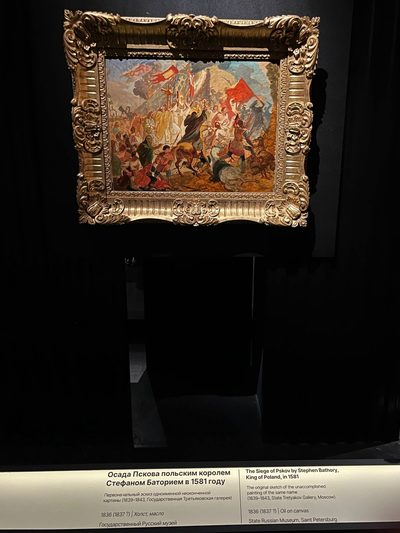
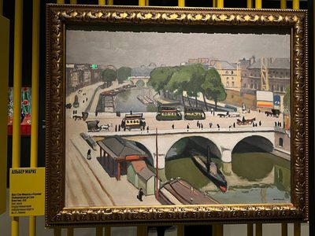
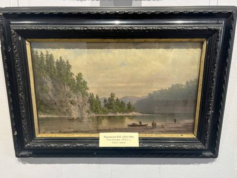
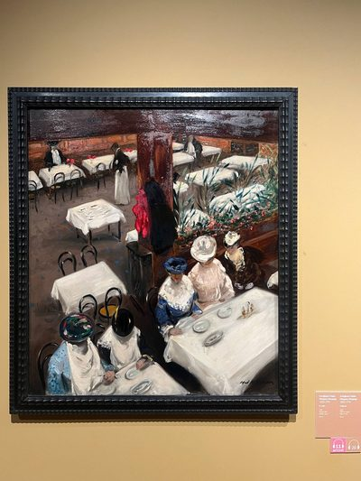
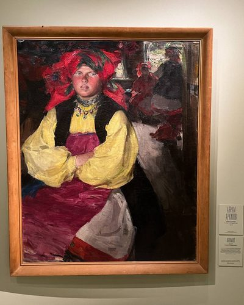
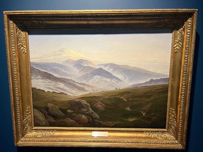
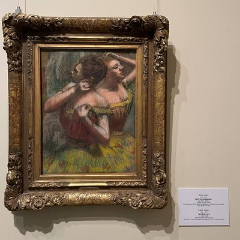
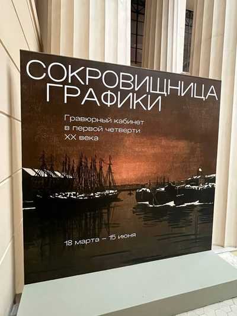
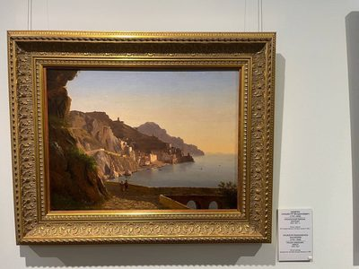
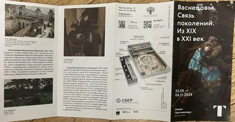
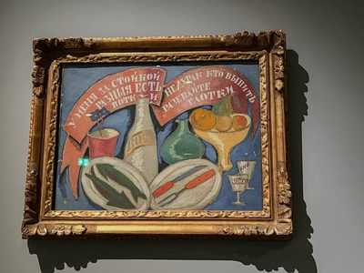
Пока ничего нет.